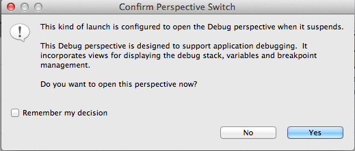
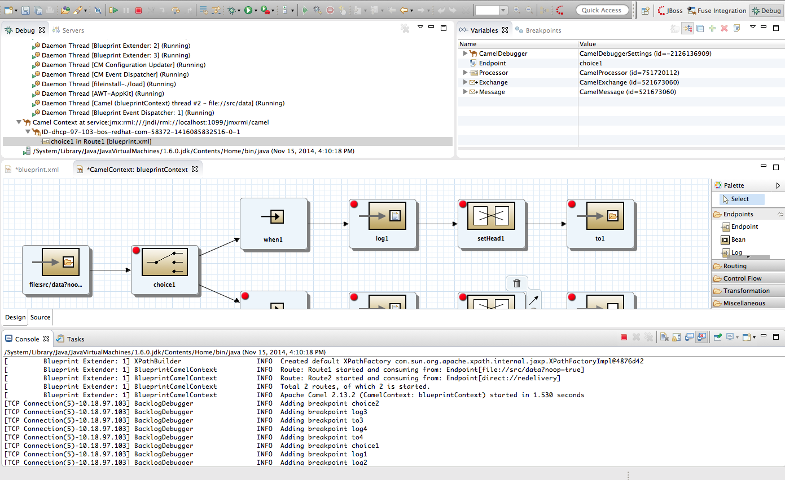

In Project Explorer, select the routing context file you want to debug.
Right-click it to open the context menu, and then select > .
Fuse Tooling builds the Camel route, starts up Apache Camel, starts the routing context, enables JMX, starts the route(s) in the routing context, adds the breakpoints to the nodes, and enables the Camel debugger.
The Camel debugger suspends execution of the routing context at the first breakpoint hit (received a message), and asks whether you want it to open the Debug perspective.
Click Yes to open Debug perspective.
Debug perspective opens with the routing context suspended at the first breakpoint hit in the running routing context.
![[Important]](imagesdb/important.png)
Important Breakpoints are held for a maximum of five minutes, after which debugging automatically resumes, moving on to the next breakpoint hit or to the end of the routing context.
![[Note]](imagesdb/note.png)
Note To see the console output, you'll need to open Console view if it was not open when you switched perspectives.
Note By default, Debug perspective opens displaying Outline view, which provides the means to switch between separate routes in a running routing context. If your routing context contains a single route, closing Outline view will provide more space to expand the other views, making it easier to access and examine debugger output.